Chapter 3 · Bipolar Junction Transistors
Vector reconstruction of the original PDF. Text remains searchable/selectable through the aligned HTML text layer.
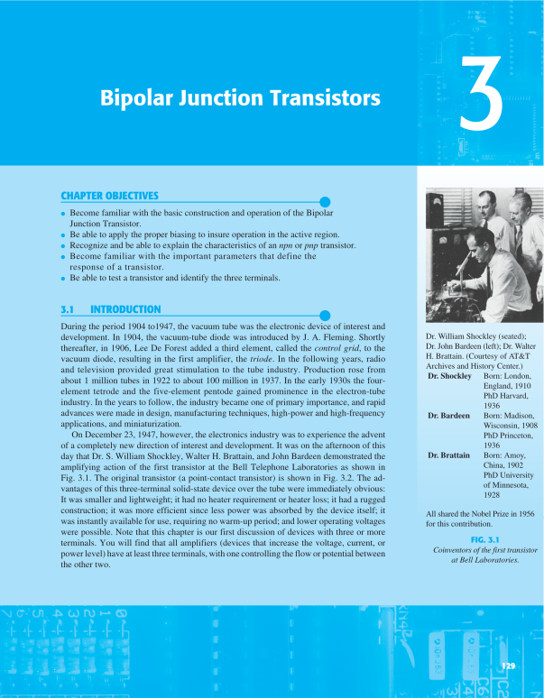
CHAPTER OBJECTIVES ● ● Become familiar with the basic construction and operation of the Bipolar Junction Transistor. ● Be able to apply the proper biasing to insure operation in the active region. ● Recognize and be able to explain the characteristics of an npn or pnp transistor. ● Become familiar with the important parameters that define the response of a transistor. ● Be able to test a transistor and identify the three terminals. 3.1 INTRODUCTION ● During the period 1904 to1947, the vacuum tube was the electronic device of interest and development. In 1904, the vacuum-tube diode was introduced by J. A. Fleming. Shortly thereafter, in 1906, Lee De Forest added a third element, called the control grid , to the vacuum diode, resulting in the first amplifier, the triode . In the following years, radio and television provided great stimulation to the tube industry. Production rose from about 1 million tubes in 1922 to about 100 million in 1937. In the early 1930s the four-element tetrode and the five-element pentode gained prominence in the electron-tube industry. In the years to follow, the industry became one of primary importance, and rapid advances were made in design, manufacturing techniques, high-power and high-frequency applications, and miniaturization. On December 23, 1947, however, the electronics industry was to experience the advent of a completely new direction of interest and development. It was on the afternoon of this day that Dr. S. William Shockley, Walter H. Brattain, and John Bardeen demonstrated the amplifying action of the first transistor at the Bell Telephone Laboratories as shown in Fig. 3.1 . The original transistor (a point-contact transistor) is shown in Fig. 3.2 . The ad-vantages of this three-terminal solid-state device over the tube were immediately obvious: It was smaller and lightweight; it had no heater requirement or heater loss; it had a rugged construction; it was more efficient since less power was absorbed by the device itself; it was instantly available for use, requiring no warm-up period; and lower operating voltages were possible. Note that this chapter is our first discussion of devices with three or more terminals. You will find that all amplifiers (devices that increase the voltage, current, or power level) have at least three terminals, with one controlling the flow or potential between the other two. 3 Bipolar Junction Transistors 129 Dr. William Shockley (seated); Dr. John Bardeen (left); Dr. Walter H. Brattain. (Courtesy of AT&T Archives and History Center.) Dr. Shockley Born: London, England, 1910 PhD Harvard, 1936 Dr. Bardeen Born: Madison, Wisconsin, 1908 PhD Princeton, 1936 Dr. Brattain Born: Amoy, China, 1902 PhD University of Minnesota, 1928 All shared the Nobel Prize in 1956 for this contribution. FIG. 3.1Coinventors of the first transistor at Bell Laboratories.
textbook p. 129PDF p. 1
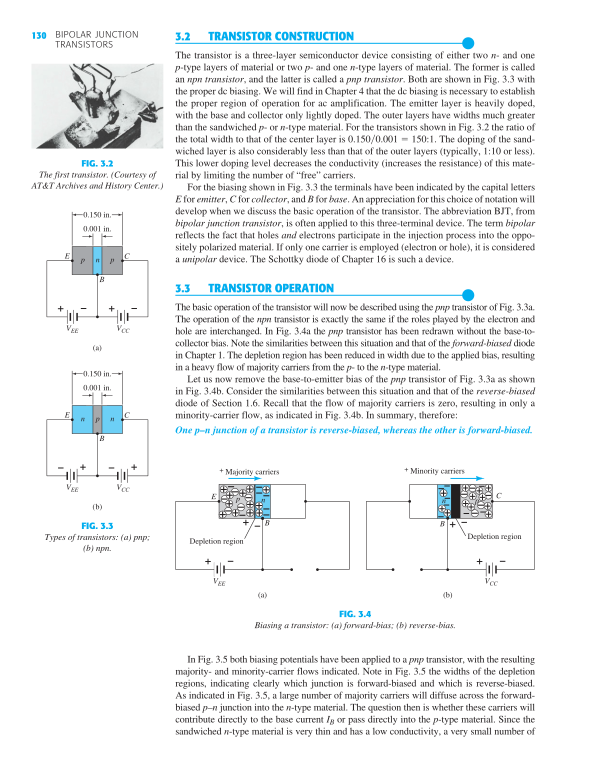
3.2 TRANSISTOR CONSTRUCTION ● The transistor is a three-layer semiconductor device consisting of either two n - and one p -type layers of material or two p - and one n -type layers of material. The former is called an npn transistor , and the latter is called a pnp transistor . Both are shown in Fig. 3.3 with the proper dc biasing. We will find in Chapter 4 that the dc biasing is necessary to establish the proper region of operation for ac amplification. The emitter layer is heavily doped, with the base and collector only lightly doped. The outer layers have widths much greater than the sandwiched p - or n -type material. For the transistors shown in Fig. 3.2 the ratio of the total width to that of the center layer is 0.1500.001 150:1. The doping of the sand-wiched layer is also considerably less than that of the outer layers (typically, 1:10 or less). This lower doping level decreases the conductivity (increases the resistance) of this mate-rial by limiting the number of “free” carriers. For the biasing shown in Fig. 3.3 the terminals have been indicated by the capital letters E for emitter , C for collector , and B for base . An appreciation for this choice of notation will develop when we discuss the basic operation of the transistor. The abbreviation BJT, from bipolar junction transistor , is often applied to this three-terminal device. The term bipolar reflects the fact that holes and electrons participate in the injection process into the oppo-sitely polarized material. If only one carrier is employed (electron or hole), it is considered a unipolar device. The Schottky diode of Chapter 16 is such a device. 3.3 TRANSISTOR OPERATION ● The basic operation of the transistor will now be described using the pnp transistor of Fig. 3.3a . The operation of the npn transistor is exactly the same if the roles played by the electron and hole are interchanged. In Fig. 3.4a the pnp transistor has been redrawn without the base-to-collector bias. Note the similarities between this situation and that of the forward-biased diode in Chapter 1 . The depletion region has been reduced in width due to the applied bias, resulting in a heavy flow of majority carriers from the p - to the n -type material. Let us now remove the base-to-emitter bias of the pnp transistor of Fig. 3.3a as shown in Fig. 3.4b . Consider the similarities between this situation and that of the reverse-biased diode of Section 1.6 . Recall that the flow of majority carriers is zero, resulting in only a minority-carrier flow, as indicated in Fig. 3.4b . In summary, therefore: One p–n junction of a transistor is reverse-biased, whereas the other is forward-biased. BIPOLAR JUNCTION TRANSISTORS130 FIG. 3.2 The first transistor. (Courtesy of AT&T Archives and History Center.) VEEEBCppn0.150 in.0.001 in.(a)EBCnnp0.150 in.0.001 in.+–VCC+–VEE–+VCC–+(b) FIG. 3.3 Types of transistors: (a) pnp; (b) npn. (a)(b)–++++++++++–––––––pn+++–––––VCCBDepletion region+ –+ Minority carriersC+–E+ Majority carriersVEEBDepletion region+ –+–+++++ + ++ +++–––––––––– ––pn+++++++++++++++ +++++ FIG. 3.4 Biasing a transistor: (a) forward-bias; (b) reverse-bias. In Fig. 3.5 both biasing potentials have been applied to a pnp transistor, with the resulting majority- and minority-carrier flows indicated. Note in Fig. 3.5 the widths of the depletion regions, indicating clearly which junction is forward-biased and which is reverse-biased. As indicated in Fig. 3.5 , a large number of majority carriers will diffuse across the forward-biased p–n junction into the n -type material. The question then is whether these carriers will contribute directly to the base current I B or pass directly into the p -type material. Since the sandwiched n -type material is very thin and has a low conductivity, a very small number of
textbook p. 130PDF p. 2
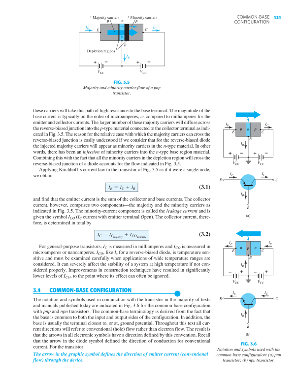
these carriers will take this path of high resistance to the base terminal. The magnitude of the base current is typically on the order of microamperes, as compared to milliamperes for the emitter and collector currents. The larger number of these majority carriers will diffuse across the reverse-biased junction into the p -type material connected to the collector terminal as indi-cated in Fig. 3.5 . The reason for the relative ease with which the majority carriers can cross the reverse-biased junction is easily understood if we consider that for the reverse-biased diode the injected majority carriers will appear as minority carriers in the n -type material. In other words, there has been an injection of minority carriers into the n -type base region material. Combining this with the fact that all the minority carriers in the depletion region will cross the reverse-biased junction of a diode accounts for the flow indicated in Fig. 3.5 . Applying Kirchhoff’s current law to the transistor of Fig. 3.5 as if it were a single node, we obtain IE = IC + IB (3.1) and find that the emitter current is the sum of the collector and base currents. The collector current, however, comprises two components—the majority and the minority carriers as indicated in Fig. 3.5 . The minority-current component is called the leakage current and is given the symbol I CO ( I C current with emitter terminal O pen). The collector current, there-fore, is determined in total by IC = ICmajority + ICOminority (3.2) For general-purpose transistors, I C is measured in milliamperes and I CO is measured in microamperes or nanoamperes. I CO , like I s for a reverse-biased diode, is temperature sen-sitive and must be examined carefully when applications of wide temperature ranges are considered. It can severely affect the stability of a system at high temperature if not con-sidered properly. Improvements in construction techniques have resulted in significantly lower levels of I CO , to the point where its effect can often be ignored. 3.4 COMMON-BASE CONFIGURATION ● The notation and symbols used in conjunction with the transistor in the majority of texts and manuals published today are indicated in Fig. 3.6 for the common-base configuration with pnp and npn transistors. The common-base terminology is derived from the fact that the base is common to both the input and output sides of the configuration. In addition, the base is usually the terminal closest to, or at, ground potential. Throughout this text all cur-rent directions will refer to conventional (hole) flow rather than electron flow. The result is that the arrows in all electronic symbols have a direction defined by this convention. Recall that the arrow in the diode symbol defined the direction of conduction for conventional current. For the transistor: The arrow in the graphic symbol defines the direction of emitter current (conventional flow) through the device. 131COMMON-BASE CONFIGURATIONVCCEBVEEDepletion regions+ Minority carriersC+ Majority carriersIEIBICppn+–+– FIG. 3.5 Majority and minority carrier flow of a pnp transistor. VEEEBBCECVCCppn(a)IEIEIBIBICIC+–+–VEEEBBCECVCCnnp(b)IEIEIBICICIB+–+– FIG. 3.6 Notation and symbols used with the common-base configuration: (a) pnp transistor; (b) npn transistor.
textbook p. 131PDF p. 3
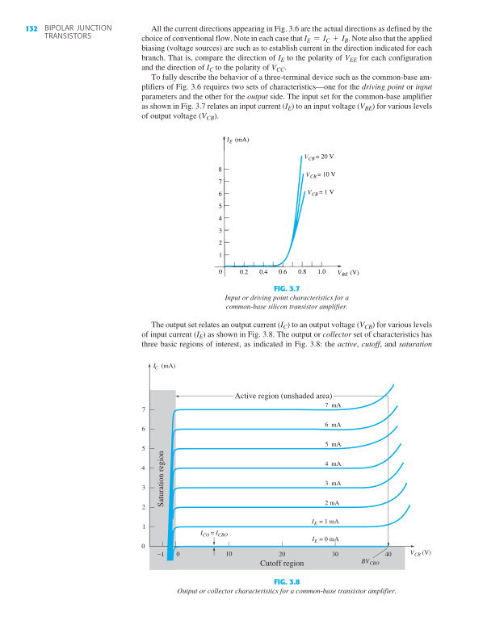
BIPOLAR JUNCTION TRANSISTORS132 All the current directions appearing in Fig. 3.6 are the actual directions as defined by the choice of conventional flow. Note in each case that IE = IC + IB. Note also that the applied biasing (voltage sources) are such as to establish current in the direction indicated for each branch. That is, compare the direction of I E to the polarity of V EE for each configuration and the direction of I C to the polarity of V CC . To fully describe the behavior of a three-terminal device such as the common-base am-plifiers of Fig. 3.6 requires two sets of characteristics—one for the driving point or input parameters and the other for the output side. The input set for the common-base amplifier as shown in Fig. 3.7 relates an input current ( I E ) to an input voltage ( V BE ) for various levels of output voltage ( V CB ). FIG. 3.7 Input or driving point characteristics for a common-base silicon transistor amplifier. The output set relates an output current ( I C ) to an output voltage ( V CB ) for various levels of input current ( I E ) as shown in Fig. 3.8 . The output or collector set of characteristics has three basic regions of interest, as indicated in Fig. 3.8 : the active , cutoff , and saturation CI(mA)0020304010−11234567EIEI= 1 mA2 mA3 mA4 mA5 mA6 mA7 mACutoff regionActive region (unshaded area)CBVCBOBV(V) = 0 mAICO = ICBO FIG. 3.8 Output or collector characteristics for a common-base transistor amplifier.
textbook p. 132PDF p. 4
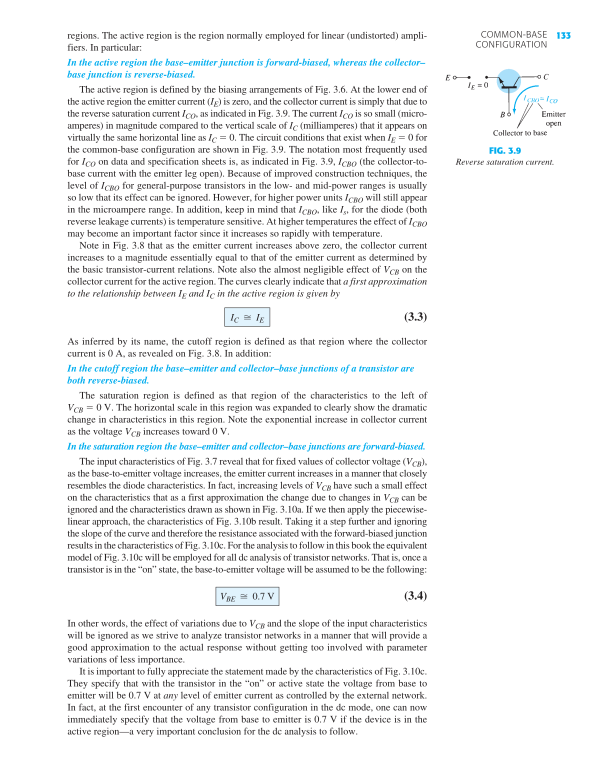
133COMMON-BASE CONFIGURATIONregions. The active region is the region normally employed for linear (undistorted) ampli-fiers. In particular: In the active region the base–emitter junction is forward-biased, whereas the collector–base junction is reverse-biased. The active region is defined by the biasing arrangements of Fig. 3.6 . At the lower end of the active region the emitter current ( I E ) is zero, and the collector current is simply that due to the reverse saturation current I CO , as indicated in Fig. 3.9 . The current I CO is so small (micro-amperes) in magnitude compared to the vertical scale of I C (milliamperes) that it appears on virtually the same horizontal line as I C 0. The circuit conditions that exist when I E 0 for the common-base configuration are shown in Fig. 3.9 . The notation most frequently used for I CO on data and specification sheets is, as indicated in Fig. 3.9 , I CBO (the collector-to-base current with the emitter leg open). Because of improved construction techniques, the level of I CBO for general-purpose transistors in the low- and mid-power ranges is usually so low that its effect can be ignored. However, for higher power units I CBO will still appear in the microampere range. In addition, keep in mind that I CBO , like I s , for the diode (both reverse leakage currents) is temperature sensitive. At higher temperatures the effect of I CBO may become an important factor since it increases so rapidly with temperature. Note in Fig. 3.8 that as the emitter current increases above zero, the collector current increases to a magnitude essentially equal to that of the emitter current as determined by the basic transistor-current relations. Note also the almost negligible effect of V CB on the collector current for the active region. The curves clearly indicate that a first approximation to the relationship between I E and I C in the active region is given by IC IE (3.3) As inferred by its name, the cutoff region is defined as that region where the collector current is 0 A, as revealed on Fig. 3.8 . In addition: In the cutoff region the base–emitter and collector–base junctions of a transistor are both reverse-biased. The saturation region is defined as that region of the characteristics to the left of V CB 0 V. The horizontal scale in this region was expanded to clearly show the dramatic change in characteristics in this region. Note the exponential increase in collector current as the voltage V CB increases toward 0 V. In the saturation region the base–emitter and collector–base junctions are forward-biased. The input characteristics of Fig. 3.7 reveal that for fixed values of collector voltage ( V CB ), as the base-to-emitter voltage increases, the emitter current increases in a manner that closely resembles the diode characteristics. In fact, increasing levels of V CB have such a small effect on the characteristics that as a first approximation the change due to changes in V CB can be ignored and the characteristics drawn as shown in Fig. 3.10a . If we then apply the piecewise-linear approach, the characteristics of Fig. 3.10b result. Taking it a step further and ignoring the slope of the curve and therefore the resistance associated with the forward-biased junction results in the characteristics of Fig. 3.10c . For the analysis to follow in this book the equivalent model of Fig. 3.10c will be employed for all dc analysis of transistor networks. That is, once a transistor is in the “on” state, the base-to-emitter voltage will be assumed to be the following: VBE 0.7 V (3.4) In other words, the effect of variations due to V CB and the slope of the input characteristics will be ignored as we strive to analyze transistor networks in a manner that will provide a good approximation to the actual response without getting too involved with parameter variations of less importance. It is important to fully appreciate the statement made by the characteristics of Fig. 3.10c . They specify that with the transistor in the “on” or active state the voltage from base to emitter will be 0.7 V at any level of emitter current as controlled by the external network. In fact, at the first encounter of any transistor configuration in the dc mode, one can now immediately specify that the voltage from base to emitter is 0.7 V if the device is in the active region—a very important conclusion for the dc analysis to follow. FIG. 3.9 Reverse saturation current.
textbook p. 133PDF p. 5
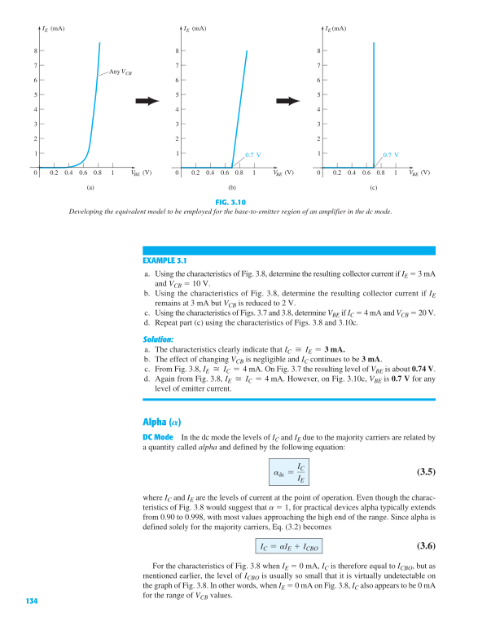
EXAMPLE 3.1 a. Using the characteristics of Fig. 3.8 , determine the resulting collector current if I E 3 mA and V CB 10 V. b. Using the characteristics of Fig. 3.8 , determine the resulting collector current if I E remains at 3 mA but V CB is reduced to 2 V. c. Using the characteristics of Figs. 3.7 and 3.8 , determine V BE if I C 4 mA and V CB 20 V. d. Repeat part (c) using the characteristics of Figs. 3.8 and 3.10c . Solution: a. The characteristics clearly indicate that IC IE = 3 mA. b. The effect of changing V CB is negligible and I C continues to be 3 mA . c. From Fig. 3.8 , IE IC = 4 mA. On Fig. 3.7 the resulting level of V BE is about 0.74 V . d. Again from Fig. 3.8 , IE IC = 4 mA. However, on Fig. 3.10c , V BE is 0.7 V for any level of emitter current. Alpha (A) DC Mode In the dc mode the levels of I C and I E due to the majority carriers are related by a quantity called alpha and defined by the following equation: adc = ICIE(3.5) where I C and I E are the levels of current at the point of operation. Even though the charac-teristics of Fig. 3.8 would suggest that a 1, for practical devices alpha typically extends from 0.90 to 0.998, with most values approaching the high end of the range. Since alpha is defined solely for the majority carriers, Eq. (3.2) becomes IC = aIE + ICBO (3.6) For the characteristics of Fig. 3.8 when I E 0 mA, I C is therefore equal to I CBO , but as mentioned earlier, the level of I CBO is usually so small that it is virtually undetectable on the graph of Fig. 3.8 . In other words, when I E 0 mA on Fig. 3.8 , I C also appears to be 0 mA for the range of V CB values. EI(mA)0123456780.20.610.40.8(a)EIBE(mA)AnyCBV(V) VVBE (V) VEI(mA)0123456780.20.610.40.812345678BE (V) 00.20.610.40.80.7 V (b)(c)0.7 V FIG. 3.10 Developing the equivalent model to be employed for the base-to-emitter region of an amplifier in the dc mode. 134
textbook p. 134PDF p. 6
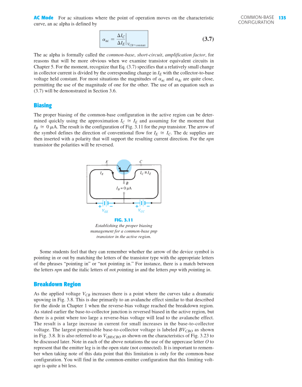
135COMMON-BASE CONFIGURATION AC Mode For ac situations where the point of operation moves on the characteristic curve, an ac alpha is defined by aac = ICIEVCB = constant(3.7) The ac alpha is formally called the common-base , short-circuit , amplification factor , for reasons that will be more obvious when we examine transistor equivalent circuits in Chapter 5 . For the moment, recognize that Eq. (3.7) specifies that a relatively small change in collector current is divided by the corresponding change in I E with the collector-to-base voltage held constant. For most situations the magnitudes of a ac and a dc are quite close, permitting the use of the magnitude of one for the other. The use of an equation such as (3.7) will be demonstrated in Section 3.6 . Biasing The proper biasing of the common-base configuration in the active region can be deter-mined quickly using the approximation IC IE and assuming for the moment that IB 0 mA. The result is the configuration of Fig. 3.11 for the pnp transistor. The arrow of the symbol defines the direction of conventional flow for IE IC. The dc supplies are then inserted with a polarity that will support the resulting current direction. For the npn transistor the polarities will be reversed. VEE+–VCC+– FIG. 3.11 Establishing the proper biasing management for a common-base pnp transistor in the active region. Some students feel that they can remember whether the arrow of the device symbol is pointing in or out by matching the letters of the transistor type with the appropriate letters of the phrases “pointing in” or “not pointing in.” For instance, there is a match between the letters npn and the italic letters of n ot p ointing i n and the letters pnp with p ointing i n . Breakdown Region As the applied voltage V CB increases there is a point where the curves take a dramatic upswing in Fig. 3.8 . This is due primarily to an avalanche effect similar to that described for the diode in Chapter 1 when the reverse-bias voltage reached the breakdown region. As stated earlier the base-to-collector junction is reversed biased in the active region, but there is a point where too large a reverse-bias voltage will lead to the avalanche effect. The result is a large increase in current for small increases in the base-to-collector voltage. The largest permissible base-to-collector voltage is labeled BV CBO as shown in Fig. 3.8 . It is also referred to as V (BR)CBO as shown on the characteristics of Fig. 3.23 to be discussed later. Note in each of the above notations the use of the uppercase letter O to represent that the emitter leg is in the open state (not connected). It is important to remem-ber when taking note of this data point that this limitation is only for the common-base configuration. You will find in the common-emitter configuration that this limiting volt-age is quite a bit less.
textbook p. 135PDF p. 7
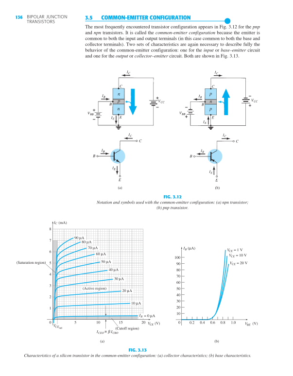
BIPOLAR JUNCTION TRANSISTORS136 3.5 COMMON-EMITTER CONFIGURATION ● The most frequently encountered transistor configuration appears in Fig. 3.12 for the pnp and npn transistors. It is called the common-emitter configuration because the emitter is common to both the input and output terminals (in this case common to both the base and collector terminals). Two sets of characteristics are again necessary to describe fully the behavior of the common-emitter configuration: one for the input or base–emitter circuit and one for the output or collector–emitter circuit. Both are shown in Fig. 3.13 . CICEV(mA)012345675101520CEOICBO I~CEsatV(Cutoff region)BIBEV (μA)01020304050607080901000.20.40.60.81.0CEV= 1 VCEV= 20 V(a)(Saturation region)=(V) CE = 10 VV(V) (b)8(Active region)90 μA80 μA70 μA60 μA50 μA40 μA30 μA20 μA10 μABI= 0 μAβ FIG. 3.13 Characteristics of a silicon transistor in the common-emitter configuration: (a) collector characteristics; (b) base characteristics. (a)(b) FIG. 3.12 Notation and symbols used with the common-emitter configuration: (a) npn transistor;(b) pnp transistor.
textbook p. 136PDF p. 8
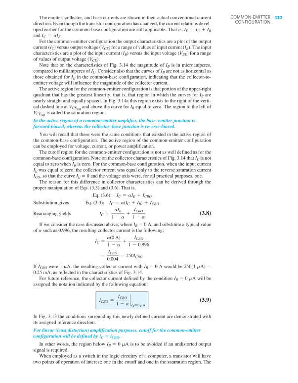
137COMMON-EMITTER CONFIGURATION The emitter, collector, and base currents are shown in their actual conventional current direction. Even though the transistor configuration has changed, the current relations devel-oped earlier for the common-base configuration are still applicable. That is, IE = IC + IB and IC = aIE. For the common-emitter configuration the output characteristics are a plot of the output current ( I C ) versus output voltage ( V CE ) for a range of values of input current ( I B ). The input characteristics are a plot of the input current ( I B ) versus the input voltage ( V BE ) for a range of values of output voltage ( V CE ). Note that on the characteristics of Fig. 3.14 the magnitude of I B is in microamperes, compared to milliamperes of I C . Consider also that the curves of I B are not as horizontal as those obtained for I E in the common-base configuration, indicating that the collector-to-emitter voltage will influence the magnitude of the collector current. The active region for the common-emitter configuration is that portion of the upper-right quadrant that has the greatest linearity, that is, that region in which the curves for I B are nearly straight and equally spaced. In Fig. 3.14a this region exists to the right of the verti-cal dashed line at V CE sat and above the curve for I B equal to zero. The region to the left of V CE sat is called the saturation region. In the active region of a common-emitter amplifier, the base–emitter junction is forward-biased, whereas the collector–base junction is reverse-biased. You will recall that these were the same conditions that existed in the active region of the common-base configuration. The active region of the common-emitter configuration can be employed for voltage, current, or power amplification. The cutoff region for the common-emitter configuration is not as well defined as for the common-base configuration. Note on the collector characteristics of Fig. 3.14 that I C is not equal to zero when I B is zero. For the common-base configuration, when the input current I E was equal to zero, the collector current was equal only to the reverse saturation current I CO , so that the curve I E 0 and the voltage axis were, for all practical purposes, one. The reason for this difference in collector characteristics can be derived through the proper manipulation of Eqs. (3.3) and (3.6). That is, Eq. (3.6): IC = aIE + ICBO Substitution gives Eq. (3.3): IC = a(IC + IB) + ICBO Rearranging yields IC =aIB1 - a +ICBO1 - a (3.8) If we consider the case discussed above, where I B 0 A, and substitute a typical value of a such as 0.996, the resulting collector current is the following: IC = a(0 A)1 - a +ICBO1 - 0.996 = ICBO0.004 = 250ICBO If I CBO were 1 mA, the resulting collector current with I B 0 A would be 250(1 mA) 0.25 mA, as reflected in the characteristics of Fig. 3.14 . For future reference, the collector current defined by the condition I B 0 mA will be assigned the notation indicated by the following equation: ICEO =ICBO1 - a `IB=0 mA(3.9) In Fig. 3.13 the conditions surrounding this newly defined current are demonstrated with its assigned reference direction. For linear (least distortion) amplification purposes, cutoff for the common-emitter configuration will be defined by I C I CEO . In other words, the region below I B 0 mA is to be avoided if an undistorted output signal is required. When employed as a switch in the logic circuitry of a computer, a transistor will have two points of operation of interest: one in the cutoff and one in the saturation region. The
textbook p. 137PDF p. 9
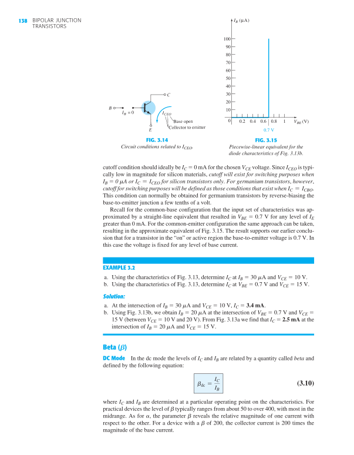
BIPOLAR JUNCTION TRANSISTORS138 cutoff condition should ideally be I C 0 mA for the chosen V CE voltage. Since I CEO is typi-cally low in magnitude for silicon materials, cutoff will exist for switching purposes when I B 0 mA or IC = ICEO for silicon transistors only . For germanium transistors , however , cutoff for switching purposes will be defined as those conditions that exist when IC = ICBO. This condition can normally be obtained for germanium transistors by reverse-biasing the base-to-emitter junction a few tenths of a volt. Recall for the common-base configuration that the input set of characteristics was ap-proximated by a straight-line equivalent that resulted in V BE 0.7 V for any level of I E greater than 0 mA. For the common-emitter configuration the same approach can be taken, resulting in the approximate equivalent of Fig. 3.15 . The result supports our earlier conclu-sion that for a transistor in the “on” or active region the base-to-emitter voltage is 0.7 V. In this case the voltage is fixed for any level of base current. EXAMPLE 3.2 a. Using the characteristics of Fig. 3.13 , determine I C at I B 30 mA and V CE 10 V. b. Using the characteristics of Fig. 3.13 , determine I C at V BE 0.7 V and V CE 15 V. Solution: a. At the intersection of I B 30 mA and V CE 10 V, I C 3.4 mA . b. Using Fig. 3.13b , we obtain I B 20 mA at the intersection of V BE 0.7 V and V CE 15 V (between V CE 10 V and 20 V). From Fig. 3.13a we find that I C 2.5 mA at the intersection of I B 20 mA and V CE 15 V. Beta (B) DC Mode In the dc mode the levels of I C and I B are related by a quantity called beta and defined by the following equation: bdc = ICIB(3.10) where I C and I B are determined at a particular operating point on the characteristics. For practical devices the level of b typically ranges from about 50 to over 400, with most in the midrange. As for a, the parameter b reveals the relative magnitude of one current with respect to the other. For a device with a b of 200, the collector current is 200 times the magnitude of the base current. FIG. 3.14 Circuit conditions related to I CEO . BIBEV(μA)0.20.60.40.801020304050607080901000.7 V(V)1 FIG. 3.15 Piecewise-linear equivalent for the diode characteristics of Fig. 3.13b .
textbook p. 138PDF p. 10
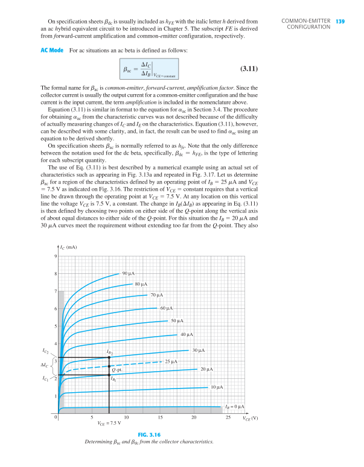
139COMMON-EMITTER CONFIGURATION On specification sheets b dc is usually included as h FE with the italic letter h derived from an ac h ybrid equivalent circuit to be introduced in Chapter 5 . The subscript FE is derived from f orward-current amplification and common- e mitter configuration, respectively. AC Mode For ac situations an ac beta is defined as follows: bac = ICIBVCE = constant(3.11) The formal name for b ac is common-emitter , forward-current , amplification factor . Since the collector current is usually the output current for a common-emitter configuration and the base current is the input current, the term amplification is included in the nomenclature above. Equation (3.11) is similar in format to the equation for a ac in Section 3.4 . The procedure for obtaining a ac from the characteristic curves was not described because of the difficulty of actually measuring changes of I C and I E on the characteristics. Equation (3.11), however, can be described with some clarity, and, in fact, the result can be used to find a ac using an equation to be derived shortly. On specification sheets b ac is normally referred to as h fe . Note that the only difference between the notation used for the dc beta, specifically, bdc = hFE, is the type of lettering for each subscript quantity. The use of Eq. (3.11) is best described by a numerical example using an actual set of characteristics such as appearing in Fig. 3.13a and repeated in Fig. 3.17 . Let us determine b ac for a region of the characteristics defined by an operating point of I B 25 mA and V CE 7.5 V as indicated on Fig. 3.16 . The restriction of V CE constant requires that a vertical line be drawn through the operating point at V CE 7.5 V. At any location on this vertical line the voltage V CE is 7.5 V, a constant. The change in IB(IB) as appearing in Eq. (3.11) is then defined by choosing two points on either side of the Q -point along the vertical axis of about equal distances to either side of the Q -point. For this situation the I B 20 mA and 30 mA curves meet the requirement without extending too far from the Q -point. They also CI(mA)012345678910152025IC2ICΔ(V)CEVV= 7.5 VCE510 μABI20 μA40 μA50 μA60 μA70 μA80 μA90 μA30 μA= 0 μA25 μABI 1BI 2Q - pt.IC1 FIG. 3.16 Determining b ac and b dc from the collector characteristics.
textbook p. 139PDF p. 11
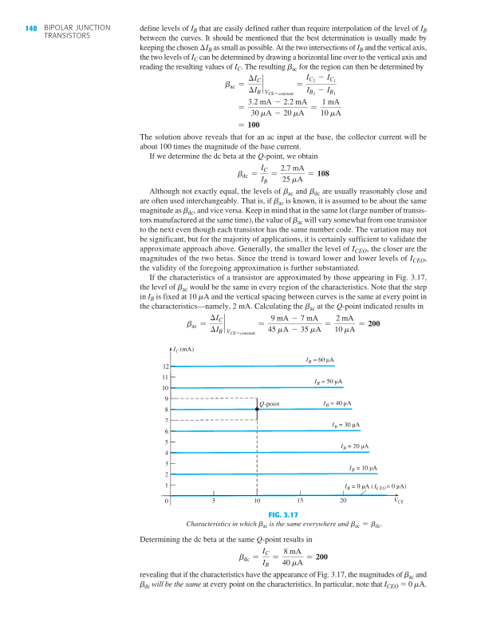
BIPOLAR JUNCTION TRANSISTORS140 define levels of I B that are easily defined rather than require interpolation of the level of I B between the curves. It should be mentioned that the best determination is usually made by keeping the chosen IB as small as possible. At the two intersections of I B and the vertical axis, the two levels of I C can be determined by drawing a horizontal line over to the vertical axis and reading the resulting values of I C . The resulting b ac for the region can then be determined by bac = ICIBVCE = constant=IC2 - IC1IB2 - IB1 = 3.2 mA - 2.2 mA30 mA - 20 mA= 1 mA10 mA = 100 The solution above reveals that for an ac input at the base, the collector current will be about 100 times the magnitude of the base current. If we determine the dc beta at the Q -point, we obtain bdc = ICIB= 2.7 mA25 mA = 108 Although not exactly equal, the levels of b ac and b dc are usually reasonably close and are often used interchangeably. That is, if b ac is known, it is assumed to be about the same magnitude as b dc , and vice versa. Keep in mind that in the same lot (large number of transis-tors manufactured at the same time), the value of b ac will vary somewhat from one transistor to the next even though each transistor has the same number code. The variation may not be significant, but for the majority of applications, it is certainly sufficient to validate the approximate approach above. Generally, the smaller the level of I CEO , the closer are the magnitudes of the two betas. Since the trend is toward lower and lower levels of I CEO , the validity of the foregoing approximation is further substantiated. If the characteristics of a transistor are approximated by those appearing in Fig. 3.17 , the level of b ac would be the same in every region of the characteristics. Note that the step in I B is fixed at 10 mA and the vertical spacing between curves is the same at every point in the characteristics—namely, 2 mA. Calculating the b ac at the Q -point indicated results in bac = ICIBVCE = constant=9 mA - 7 mA45 mA - 35 mA = 2 mA10 mA = 200 FIG. 3.17 Characteristics in which b ac is the same everywhere and bac = bdc. Determining the dc beta at the same Q -point results in bdc = ICIB= 8 mA40 mA = 200 revealing that if the characteristics have the appearance of Fig. 3.17 , the magnitudes of b ac and b dc will be the same at every point on the characteristics. In particular, note that I CEO 0 mA.
textbook p. 140PDF p. 12
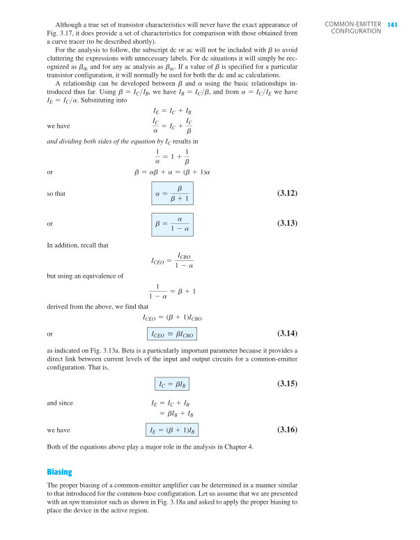
141COMMON-EMITTER CONFIGURATION Although a true set of transistor characteristics will never have the exact appearance of Fig. 3.17 , it does provide a set of characteristics for comparison with those obtained from a curve tracer (to be described shortly). For the analysis to follow, the subscript dc or ac will not be included with b to avoid cluttering the expressions with unnecessary labels. For dc situations it will simply be rec-ognized as b dc and for any ac analysis as bac. If a value of b is specified for a particular transistor configuration, it will normally be used for both the dc and ac calculations. A relationship can be developed between b and a using the basic relationships in-troduced thus far. Using b = IC>IB, we have IB = IC>b, and from a = IC>IE we have IE = IC>a. Substituting into IE = IC + IB we have ICa = IC + ICb and dividing both sides of the equation by I C results in 1a = 1 + 1b or b = ab + a = (b + 1)a so that a =bb + 1 (3.12) or b =a1 - a (3.13) In addition, recall that ICEO =ICBO1 - a but using an equivalence of 11 - a = b + 1 derived from the above, we find that ICEO = (b + 1)ICBO or ICEO bICBO (3.14) as indicated on Fig. 3.13a . Beta is a particularly important parameter because it provides a direct link between current levels of the input and output circuits for a common-emitter configuration. That is, IC = bIB (3.15) and since IE = IC + IB = bIB + IB we have IE = (b + 1)IB (3.16) Both of the equations above play a major role in the analysis in Chapter 4 . Biasing The proper biasing of a common-emitter amplifier can be determined in a manner similar to that introduced for the common-base configuration. Let us assume that we are presented with an npn transistor such as shown in Fig. 3.18a and asked to apply the proper biasing to place the device in the active region.
textbook p. 141PDF p. 13
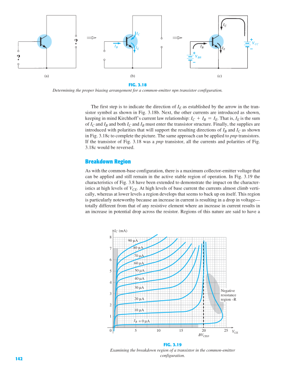
(a) (b) (c) FIG. 3.18 Determining the proper biasing arrangement for a common-emitter npn transistor configuration. The first step is to indicate the direction of I E as established by the arrow in the tran-sistor symbol as shown in Fig. 3.18b . Next, the other currents are introduced as shown, keeping in mind Kirchhoff’s current law relationship: IC + IB = IE. That is, I E is the sum of I C and I B and both I C and I B must enter the transistor structure. Finally, the supplies are introduced with polarities that will support the resulting directions of I B and I C as shown in Fig. 3.18c to complete the picture. The same approach can be applied to pnp transistors. If the transistor of Fig. 3.18 was a pnp transistor, all the currents and polarities of Fig. 3.18c would be reversed. Breakdown Region As with the common-base configuration, there is a maximum collector-emitter voltage that can be applied and still remain in the active stable region of operation. In Fig. 3.19 the characteristics of Fig. 3.8 have been extended to demonstrate the impact on the character-istics at high levels of V CE . At high levels of base current the currents almost climb verti-cally, whereas at lower levels a region develops that seems to back up on itself. This region is particularly noteworthy because an increase in current is resulting in a drop in voltage—totally different from that of any resistive element where an increase in current results in an increase in potential drop across the resistor. Regions of this nature are said to have a 70 μACIVCEBVCEO(mA)012345675101520258Negativeresistanceregion –R40 μA50 μA90 μA60 μA80 μA30 μA20 μA10 μABI= 0 μA FIG. 3.19 Examining the breakdown region of a transistor in the common-emitter configuration. 142
textbook p. 142PDF p. 14
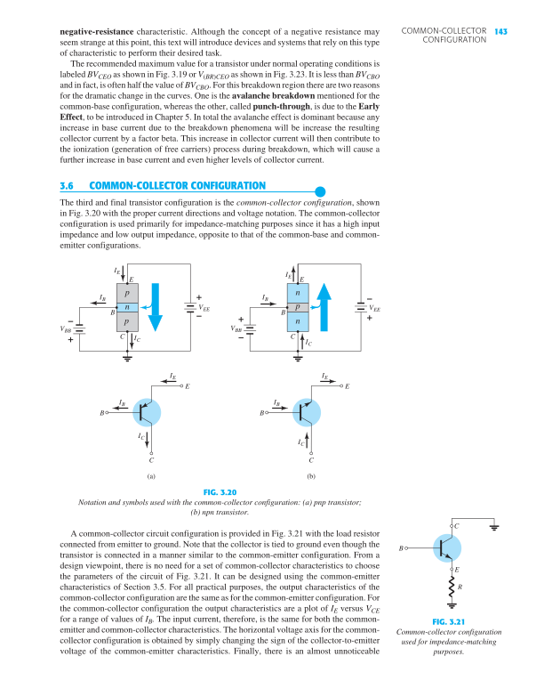
143COMMON-COLLECTOR CONFIGURATIONnegative-resistance characteristic. Although the concept of a negative resistance may seem strange at this point, this text will introduce devices and systems that rely on this type of characteristic to perform their desired task. The recommended maximum value for a transistor under normal operating conditions is labeled BV CEO as shown in Fig. 3.19 or V ( BR ) CEO as shown in Fig. 3.23 . It is less than BV CBO and in fact, is often half the value of BV CBO . For this breakdown region there are two reasons for the dramatic change in the curves. One is the avalanche breakdown mentioned for the common-base configuration, whereas the other, called punch-through, is due to the Early Effect , to be introduced in Chapter 5 . In total the avalanche effect is dominant because any increase in base current due to the breakdown phenomena will be increase the resulting collector current by a factor beta. This increase in collector current will then contribute to the ionization (generation of free carriers) process during breakdown, which will cause a further increase in base current and even higher levels of collector current. 3.6 COMMON-COLLECTOR CONFIGURATION ● The third and final transistor configuration is the common-collector configuration , shown in Fig. 3.20 with the proper current directions and voltage notation. The common-collector configuration is used primarily for impedance-matching purposes since it has a high input impedance and low output impedance, opposite to that of the common-base and common-emitter configurations. pnnCIBIEIBCEBIEICIBECBECEIBICI(a)(b)nppBBVEEVEIBCEBICIBBV++–EEV+–+–– FIG. 3.20 Notation and symbols used with the common-collector configuration: (a) pnp transistor; (b) npn transistor. A common-collector circuit configuration is provided in Fig. 3.21 with the load resistor connected from emitter to ground. Note that the collector is tied to ground even though the transistor is connected in a manner similar to the common-emitter configuration. From a design viewpoint, there is no need for a set of common-collector characteristics to choose the parameters of the circuit of Fig. 3.21 . It can be designed using the common-emitter characteristics of Section 3.5 . For all practical purposes, the output characteristics of the common-collector configuration are the same as for the common-emitter configuration. For the common-collector configuration the output characteristics are a plot of I E versus V CE for a range of values of I B . The input current, therefore, is the same for both the common-emitter and common-collector characteristics. The horizontal voltage axis for the common-collector configuration is obtained by simply changing the sign of the collector-to-emitter voltage of the common-emitter characteristics. Finally, there is an almost unnoticeable BECR FIG. 3.21 Common-collector configuration used for impedance-matching purposes.
textbook p. 143PDF p. 15
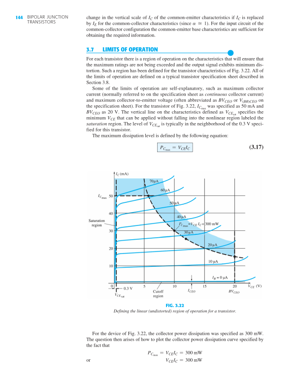
BIPOLAR JUNCTION TRANSISTORS144 change in the vertical scale of I C of the common-emitter characteristics if I C is replaced by I E for the common-collector characteristics (since a 1). For the input circuit of the common-collector configuration the common-emitter base characteristics are sufficient for obtaining the required information. 3.7 LIMITS OF OPERATION ● For each transistor there is a region of operation on the characteristics that will ensure that the maximum ratings are not being exceeded and the output signal exhibits minimum dis-tortion. Such a region has been defined for the transistor characteristics of Fig. 3.22 . All of the limits of operation are defined on a typical transistor specification sheet described in Section 3.8 . Some of the limits of operation are self-explanatory, such as maximum collector current (normally referred to on the specification sheet as continuous collector current) and maximum collector-to-emitter voltage (often abbreviated as B V CEO or V ( BR ) CEO on the specification sheet). For the transistor of Fig. 3.22 , ICmax was specified as 50 mA and B V CEO as 20 V. The vertical line on the characteristics defined as VCEsat specifies the minimum V CE that can be applied without falling into the nonlinear region labeled the saturation region. The level of VCEsat is typically in the neighborhood of the 0.3 V speci-fied for this transistor. The maximum dissipation level is defined by the following equation: PCmax = VCEIC (3.17) BVCEO FIG. 3.22 Defining the linear (undistorted) region of operation for a transistor. For the device of Fig. 3.22 , the collector power dissipation was specified as 300 mW. The question then arises of how to plot the collector power dissipation curve specified by the fact that PCmax = VCEIC = 300 mW or VCEIC = 300 mW
textbook p. 144PDF p. 16
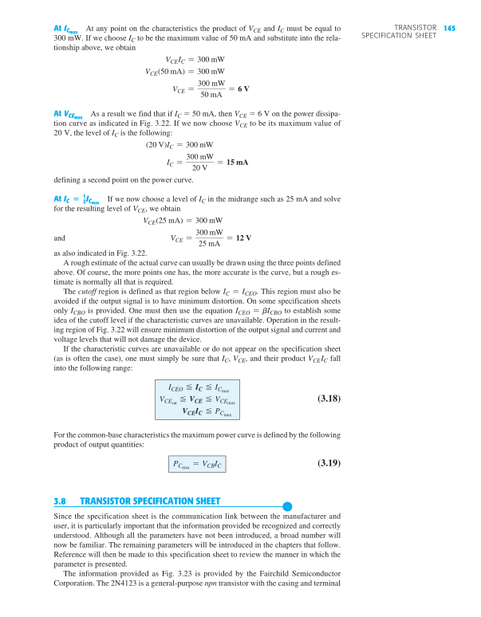
145TRANSISTOR SPECIFICATION SHEET At ICmax At any point on the characteristics the product of V CE and I C must be equal to 300 mW. If we choose I C to be the maximum value of 50 mA and substitute into the rela-tionship above, we obtain VCEIC = 300 mW VCE(50 mA) = 300 mW VCE = 300 mW50 mA= 6 V At VCEmax As a result we find that if I C 50 mA, then V CE 6 V on the power dissipa-tion curve as indicated in Fig. 3.22 . If we now choose V CE to be its maximum value of 20 V, the level of I C is the following: (20 V)IC = 300 mW IC = 300 mW20 V= 15 mA defining a second point on the power curve. At IC 12ICmax If we now choose a level of I C in the midrange such as 25 mA and solve for the resulting level of V CE , we obtain VCE(25 mA) = 300 mW and VCE = 300 mW25 mA= 12 V as also indicated in Fig. 3.22 . A rough estimate of the actual curve can usually be drawn using the three points defined above. Of course, the more points one has, the more accurate is the curve, but a rough es-timate is normally all that is required. The cutoff region is defined as that region below IC = ICEO. This region must also be avoided if the output signal is to have minimum distortion. On some specification sheets only I CBO is provided. One must then use the equation ICEO = bICBO to establish some idea of the cutoff level if the characteristic curves are unavailable. Operation in the result-ing region of Fig. 3.22 will ensure minimum distortion of the output signal and current and voltage levels that will not damage the device. If the characteristic curves are unavailable or do not appear on the specification sheet (as is often the case), one must simply be sure that I C , V CE , and their product V CE I C fall into the following range: ICEO F IC F ICmax VCEsat F VCE F VCEmax (3.18) VCEIC F PCmax For the common-base characteristics the maximum power curve is defined by the following product of output quantities: PCmax = VCBIC (3.19) 3.8 TRANSISTOR SPECIFICATION SHEET ● Since the specification sheet is the communication link between the manufacturer and user, it is particularly important that the information provided be recognized and correctly understood. Although all the parameters have not been introduced, a broad number will now be familiar. The remaining parameters will be introduced in the chapters that follow. Reference will then be made to this specification sheet to review the manner in which the parameter is presented. The information provided as Fig. 3.23 is provided by the Fairchild Semiconductor Corporation. The 2N4123 is a general-purpose npn transistor with the casing and terminal
textbook p. 145PDF p. 17
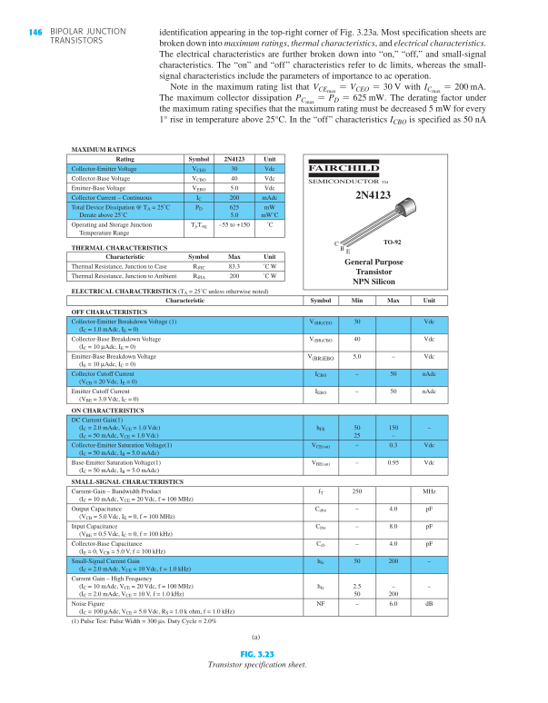
BIPOLAR JUNCTION TRANSISTORS146 identification appearing in the top-right corner of Fig. 3.23a . Most specification sheets are broken down into maximum ratings , thermal characteristics , and electrical characteristics. The electrical characteristics are further broken down into “on,” “off,” and small-signal characteristics. The “on” and “off” characteristics refer to dc limits, whereas the small-signal characteristics include the parameters of importance to ac operation. Note in the maximum rating list that VCEmax = VCEO = 30 V with ICmax = 200 mA. The maximum collector dissipation PCmax = PD = 625 mW. The derating factor under the maximum rating specifies that the maximum rating must be decreased 5 mW for every 1° rise in temperature above 25°C. In the “off” characteristics I CBO is specified as 50 nA Rating Symbol 2N4123 UnitCollector-Emitter Voltage VCEO 30 VdcCollector-Base Voltage VCBO 40 VdcEmitter-Base Voltage VEBO 5.0 VdcCollector Current – Continuous IC 200 mAdcTotal Device Dissipation @ TA = 25˚C PD 625 mWDerate above 25˚C 5.0 mW˚COperating and Storage Junction Tj,Tstg –55 to +150 ˚CTemperature RangeCharacteristic Symbol Max UnitThermal Resistance, Junction to Case RθJC 83.3 ˚C WThermal Resistance, Junction to Ambient RθJA 200 ˚C WCharacteristic Symbol Min Max UnitMAXIMUM RATINGSTHERMAL CHARACTERISTICSELECTRICAL CHARACTERISTICS (TA = 25˚C unless otherwise noted)OFF CHARACTERISTICSCollector-Emitter Breakdown Voltage (1) V(BR)CEO 30 Vdc(IC = 1.0 mAdc, IE = 0)Collector-Base Breakdown Voltage V(BR)CBO 40 Vdc(IC = 10 μAdc, IE = 0)Emitter-Base Breakdown Voltage V(BR)EBO 5.0 – Vdc(IE = 10 μAdc, IC = 0)Collector Cutoff Current ICBO – 50 nAdc(VCB = 20 Vdc, IE = 0)Emitter Cutoff Current IEBO – 50 nAdc(VBE = 3.0 Vdc, IC = 0)ON CHARACTERISTICSDC Current Gain(1)(IC = 2.0 mAdc, VCE = 1.0 Vdc) hFE 50 150 –(IC = 50 mAdc, VCE = 1.0 Vdc) 25 –Collector-Emitter Saturation Voltage(1) VCE(sat) – 0.3 Vdc(IC = 50 mAdc, IB = 5.0 mAdc)Base-Emitter Saturation Voltage(1) VBE(sat) – 0.95 Vdc(IC = 50 mAdc, IB = 5.0 mAdc)SMALL-SIGNAL CHARACTERISTICSCurrent-Gain – Bandwidth Product fT 250 MHz(IC = 10 mAdc, VCE = 20 Vdc, f = 100 MHz)Output Capacitance Cobo – 4.0 pF(VCB = 5.0 Vdc, IE = 0, f = 100 MHz)Input Capacitance Cibo – 8.0 pF(VBE = 0.5 Vdc, IC = 0, f = 100 kHz)Collector-Base Capacitance Ccb – 4.0 pF(IE = 0, VCB = 5.0 V, f = 100 kHz)Small-Signal Current Gain hfe 50 200 –(IC = 2.0 mAdc, VCE = 10 Vdc, f = 1.0 kHz)Current Gain – High Frequency (IC = 10 mAdc, VCE = 20 Vdc, f = 100 MHz) hfe 2.5 – –(IC = 2.0 mAdc, VCE = 10 V, f = 1.0 kHz) 50 200Noise Figure NF – 6.0 dB(IC = 100 μAdc, VCE = 5.0 Vdc, RS = 1.0 k ohm, f = 1.0 kHz)(1) Pulse Test: Pulse Width = 300 μs. Duty Cycle = 2.0%(a)General PurposeTransistorNPN SiliconSEMICONDUCTOR TMFAIRCHILD2N4123C B ETO-92 FIG. 3.23 Transistor specification sheet.
textbook p. 146PDF p. 18
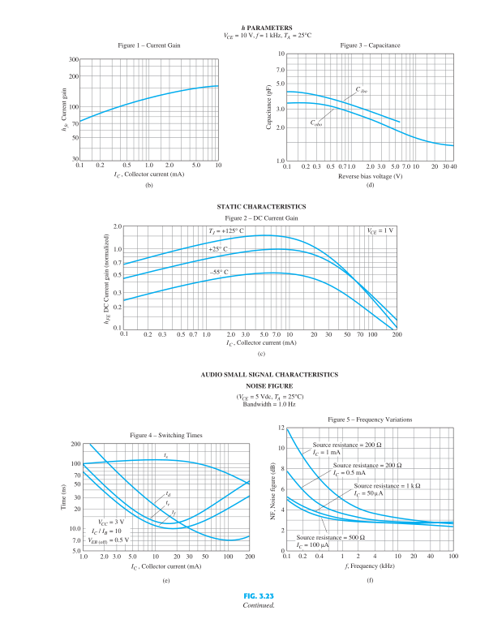
20.1(f)0.20.4124102040100f, Frequency (kHz)46810120I , Collector current (mA)C1.03.02.0102030200(e)5.050100200100705030205.07.010.0Figure 4 – Switching TimesFigure 5 – Frequency VariationststdtrtfAUDIO SMALL SIGNAL CHARACTERISTICSNOISE FIGURE(VCE = 5 Vdc, TA = 25°C)Bandwidth = 1.0 HzVCC = 3 VV= 0.5 VEB (off)= 10IC / IΩSource resistance = 200= 1 mAIC= 0.5 mAICΩSource resistance = 200= 50 AICΩSource resistance = 1 k= 100 AICΩSource resistance = 500μ μB0.1(d)0.20.70.30.51.01040Reverse bias voltage (V)2.0 3.05.0 7.03020107.05.03.02.01.0Figure 3 – CapacitanceCoboC iboFigure 1 – Current GainSTATIC CHARACTERISTICSFigure 2 – DC Current Gainh PARAMETERS= 10 V, f = 1 kHz, TVCEA = 25°C10070300.10.20.52.0103050100(c)0.1(b)0.20.52.05.0101.00.30.7 1.03.05.0 7.020702000.10.20.30.51.00.72.050200300I , Collector current (mA)CI , Collector current (mA)C= +125° CTJ+25° C–55° C= 1 VVCE FIG. 3.23 Continued.
textbook p. 147PDF p. 19
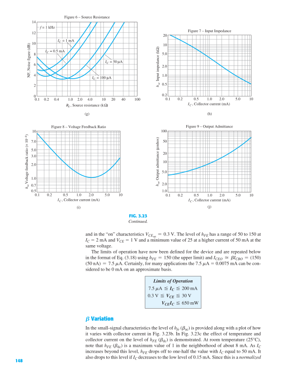
R , Source resistance (k )S40.168101214020.24.00.41.02.0102040100(g)Figure 6 – Source ResistanceΩf = 1 kHz= 1 mAIC= 0.5 mAIC= 50 AIC= 100 AICμμI , Collector current (mA)CI , Collector current (mA)CFigure 8 – Voltage Feedback RatioFigure 7 – Input Impedance0.1(h)0.20.52.05.0102.0202.00.57.010(i)1.00.10.20.52.05.0101.00.71.03.05.00.20.51.05.010Figure 9 – Output Admittance(j)0.10.20.52.05.0101.010501.05.0201002.0I , Collector current (mA)C FIG. 3.23 Continued. 148and in the “on” characteristics VCEsat = 0.3 V. The level of h FE has a range of 50 to 150 at I C 2 mA and V CE 1 V and a minimum value of 25 at a higher current of 50 mA at the same voltage. The limits of operation have now been defined for the device and are repeated below in the format of Eq. (3.18) using hFE = 150 (the upper limit) and ICEO bICBO = (150)(50 nA) = 7.5 mA. Certainly, for many applications the 7.5 mA 0.0075 mA can be con-sidered to be 0 mA on an approximate basis. Limits of Operation 7.5 mA F IC F 200 mA 0.3 V F VCE F 30 V VCEIC F 650 mW B Variation In the small-signal characteristics the level of h fe (b ac ) is provided along with a plot of how it varies with collector current in Fig. 3.23b . In Fig. 3.23c the effect of temperature and collector current on the level of h FE (b dc ) is demonstrated. At room temperature (25°C), note that h FE (b dc ) is a maximum value of 1 in the neighborhood of about 8 mA. As I C increases beyond this level, h FE drops off to one-half the value with I C equal to 50 mA. It also drops to this level if I C decreases to the low level of 0.15 mA. Since this is a normalized
textbook p. 148PDF p. 20
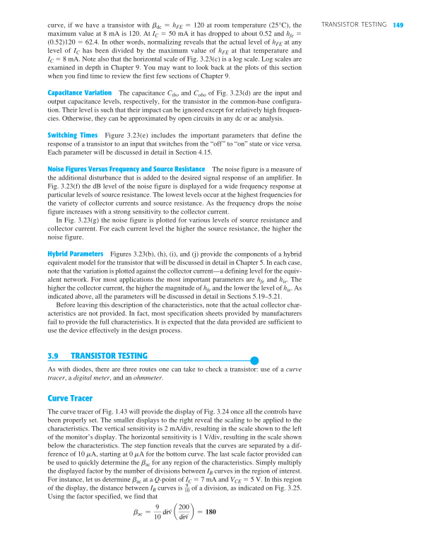
149TRANSISTOR TESTINGcurve, if we have a transistor with bdc = hFE = 120 at room temperature (25°C), the maximum value at 8 mA is 120. At I C 50 mA it has dropped to about 0.52 and h fe (0.52)120 62.4. In other words, normalizing reveals that the actual level of h FE at any level of I C has been divided by the maximum value of h FE at that temperature and I C 8 mA. Note also that the horizontal scale of Fig. 3.23(c) is a log scale. Log scales are examined in depth in Chapter 9 . You may want to look back at the plots of this section when you find time to review the first few sections of Chapter 9 . Capacitance Variation The capacitance C ibo and C obo of Fig. 3.23 (d) are the input and output capacitance levels, respectively, for the transistor in the common-base configura-tion. Their level is such that their impact can be ignored except for relatively high frequen-cies. Otherwise, they can be approximated by open circuits in any dc or ac analysis. Switching Times Figure 3.23(e) includes the important parameters that define the response of a transistor to an input that switches from the “off” to “on” state or vice versa. Each parameter will be discussed in detail in Section 4.15 . Noise Figures Versus Frequency and Source Resistance The noise figure is a measure of the additional disturbance that is added to the desired signal response of an amplifier. In Fig. 3.23 (f) the dB level of the noise figure is displayed for a wide frequency response at particular levels of source resistance. The lowest levels occur at the highest frequencies for the variety of collector currents and source resistance. As the frequency drops the noise figure increases with a strong sensitivity to the collector current. In Fig. 3.23 (g) the noise figure is plotted for various levels of source resistance and collector current. For each current level the higher the source resistance, the higher the noise figure. Hybrid Parameters Figures 3.23(b) , (h), (i), and (j) provide the components of a hybrid equivalent model for the transistor that will be discussed in detail in Chapter 5 . In each case, note that the variation is plotted against the collector current—a defining level for the equiv-alent network. For most applications the most important parameters are h fe and h ie . The higher the collector current, the higher the magnitude of h fe and the lower the level of h ie . As indicated above, all the parameters will be discussed in detail in Sections 5.19 – 5.21 . Before leaving this description of the characteristics, note that the actual collector char-acteristics are not provided. In fact, most specification sheets provided by manufacturers fail to provide the full characteristics. It is expected that the data provided are sufficient to use the device effectively in the design process. 3.9 TRANSISTOR TESTING ● As with diodes, there are three routes one can take to check a transistor: use of a curve tracer , a digital meter , and an ohmmeter. Curve Tracer The curve tracer of Fig. 1.43 will provide the display of Fig. 3.24 once all the controls have been properly set. The smaller displays to the right reveal the scaling to be applied to the characteristics. The vertical sensitivity is 2 mA/div, resulting in the scale shown to the left of the monitor’s display. The horizontal sensitivity is 1 V/div, resulting in the scale shown below the characteristics. The step function reveals that the curves are separated by a dif-ference of 10 mA, starting at 0 mA for the bottom curve. The last scale factor provided can be used to quickly determine the b ac for any region of the characteristics. Simply multiply the displayed factor by the number of divisions between I B curves in the region of interest. For instance, let us determine b ac at a Q -point of I C 7 mA and V CE 5 V. In this region of the display, the distance between I B curves is 910 of a division, as indicated on Fig. 3.25 . Using the factor specified, we find that bac = 910 div a 200div b = 180
textbook p. 149PDF p. 21
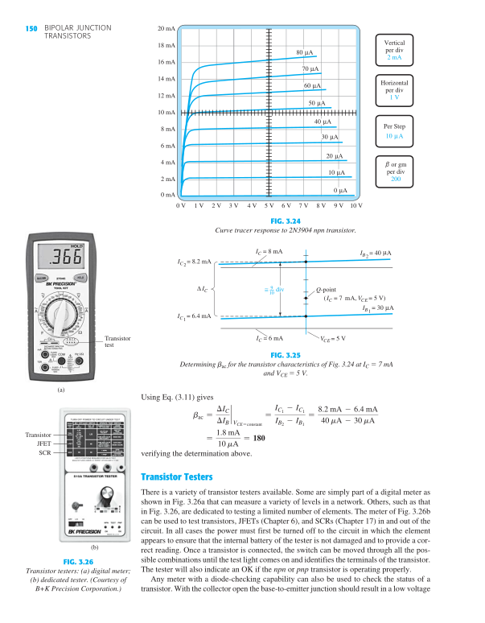
BIPOLAR JUNCTION TRANSISTORS150 Using Eq. (3.11) gives bac = ICIBVCE = constant=IC1 - IC1IB2 - IB1= 8.2 mA - 6.4 mA40 mA - 30 mA = 1.8 mA10 mA = 180 verifying the determination above. Transistor Testers There is a variety of transistor testers available. Some are simply part of a digital meter as shown in Fig. 3.26a that can measure a variety of levels in a network. Others, such as that in Fig. 3.26 , are dedicated to testing a limited number of elements. The meter of Fig. 3.26b can be used to test transistors, JFETs ( Chapter 6 ), and SCRs ( Chapter 17 ) in and out of the circuit. In all cases the power must first be turned off to the circuit in which the element appears to ensure that the internal battery of the tester is not damaged and to provide a cor-rect reading. Once a transistor is connected, the switch can be moved through all the pos-sible combinations until the test light comes on and identifies the terminals of the transistor. The tester will also indicate an OK if the npn or pnp transistor is operating properly. Any meter with a diode-checking capability can also be used to check the status of a transistor. With the collector open the base-to-emitter junction should result in a low voltage ≅ 910 div= 8 mAIC= 6 mAICIC2= 8.2 mAIC1= 6.4 mA= 7 A, CmCE = 5 V)(IVICΔ= 40 AIB2μ= 30 AIB1μQ-pointCE = 5 VV FIG. 3.25 Determining b ac for the transistor characteristics of Fig. 3.24 at I C 7 mA and V CE 5 V. 1 V3 V5 V7 V9 V8 V6 V4 V2 V0 V10 V2 mA4 mA6 mA8 mA10 mA12 mA14 mA16 mA18 mA20 mA0 mAHorizontalper div1 VB or gmper div200Per Step10 AVerticalper div2 mA80 Aμ70 Aμ60 Aμ50 Aμ40 Aμ0 Aμ20 Aμ30 Aμ10 Aμμ FIG. 3.24 Curve tracer response to 2N3904 npn transistor. TransistorJFETSCR(b) FIG. 3.26 Transistor testers: (a) digital meter; (b) dedicated tester. (Courtesy of B+K Precision Corporation.) Transistortest(a)
textbook p. 150PDF p. 22
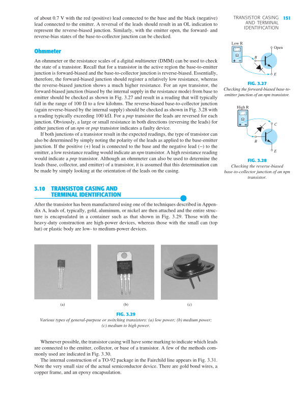
151TRANSISTOR CASING AND TERMINAL IDENTIFICATIONof about 0.7 V with the red (positive) lead connected to the base and the black (negative) lead connected to the emitter. A reversal of the leads should result in an OL indication to represent the reverse-biased junction. Similarly, with the emitter open, the forward- and reverse-bias states of the base-to-collector junction can be checked. Ohmmeter An ohmmeter or the resistance scales of a d igital m ulti m eter (DMM) can be used to check the state of a transistor. Recall that for a transistor in the active region the base-to-emitter junction is forward-biased and the base-to-collector junction is reverse-biased. Essentially, therefore, the forward-biased junction should register a relatively low resistance, whereas the reverse-biased junction shows a much higher resistance. For an npn transistor, the forward-biased junction (biased by the internal supply in the resistance mode) from base to emitter should be checked as shown in Fig. 3.27 and result in a reading that will typically fall in the range of 100 to a few kilohms. The reverse-biased base-to-collector junction (again reverse-biased by the internal supply) should be checked as shown in Fig. 3.28 with a reading typically exceeding 100 k. For a pnp transistor the leads are reversed for each junction. Obviously, a large or small resistance in both directions (reversing the leads) for either junction of an npn or pnp transistor indicates a faulty device. If both junctions of a transistor result in the expected readings, the type of transistor can also be determined by simply noting the polarity of the leads as applied to the base-emitter junction. If the positive (+) lead is connected to the base and the negative lead (−) to the emitter, a low resistance reading would indicate an npn transistor. A high resistance reading would indicate a pnp transistor. Although an ohmmeter can also be used to determine the leads (base, collector, and emitter) of a transistor, it is assumed that this determination can be made by simply looking at the orientation of the leads on the casing. 3.10 TRANSISTOR CASING AND TERMINAL IDENTIFICATION ● After the transistor has been manufactured using one of the techniques described in Appen-dix A , leads of, typically, gold, aluminum, or nickel are then attached and the entire struc-ture is encapsulated in a container such as that shown in Fig. 3.29 . Those with the heavy-duty construction are high-power devices, whereas those with the small can (top hat) or plastic body are low- to medium-power devices. CEBHigh R+–+–Ω FIG. 3.28 Checking the reverse-biased base-to-collector junction of an npn transistor. +–+–ΩOpenEBLow R FIG. 3.27 Checking the forward-biased base-to-emitter junction of an npn transistor. (a)(b)(c) FIG. 3.29 Various types of general-purpose or switching transistors: (a) low power; (b) medium power; (c) medium to high power. Whenever possible, the transistor casing will have some marking to indicate which leads are connected to the emitter, collector, or base of a transistor. A few of the methods com-monly used are indicated in Fig. 3.30 . The internal construction of a TO-92 package in the Fairchild line appears in Fig. 3.31 . Note the very small size of the actual semiconductor device. There are gold bond wires, a copper frame, and an epoxy encapsulation.
textbook p. 151PDF p. 23
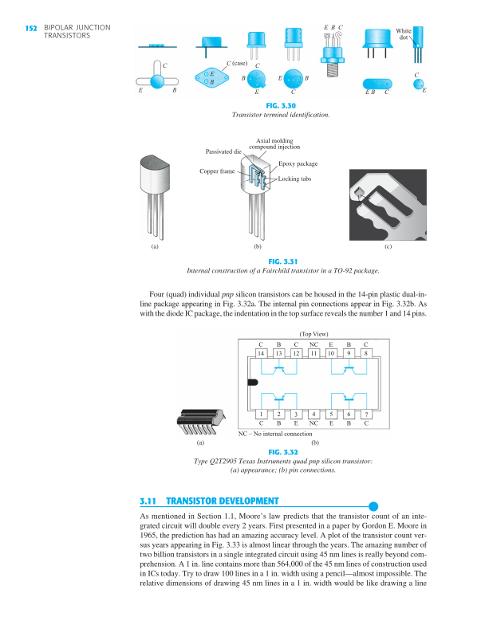
BIPOLAR JUNCTION TRANSISTORS152 Four (quad) individual pnp silicon transistors can be housed in the 14-pin plastic dual-in-line package appearing in Fig. 3.32a . The internal pin connections appear in Fig. 3.32b . As with the diode IC package, the indentation in the top surface reveals the number 1 and 14 pins. ECBECBECBECB(case)WhitedotE B CE B CCE FIG. 3.30 Transistor terminal identification. CB1413CNC(Top View)1211E10BC98CNC – No internal connectionB12ENC34E5BC67(b)(a) FIG. 3.32 Type Q2T2905 Texas Instruments quad pnp silicon transistor: (a) appearance; (b) pin connections. (a)(b)Passivated dieCopper frameAxial moldingcompound injectionEpoxy packageLocking tabs(c) FIG. 3.31 Internal construction of a Fairchild transistor in a TO-92 package. 3.11 TRANSISTOR DEVELOPMENT ● As mentioned in Section 1.1 , Moore’s law predicts that the transistor count of an inte-grated circuit will double every 2 years. First presented in a paper by Gordon E. Moore in 1965, the prediction has had an amazing accuracy level. A plot of the transistor count ver-sus years appearing in Fig. 3.33 is almost linear through the years. The amazing number of two billion transistors in a single integrated circuit using 45 nm lines is really beyond com-prehension. A 1 in. line contains more than 564,000 of the 45 nm lines of construction used in ICs today. Try to draw 100 lines in a 1 in. width using a pencil—almost impossible. The relative dimensions of drawing 45 nm lines in a 1 in. width would be like drawing a line
textbook p. 152PDF p. 24
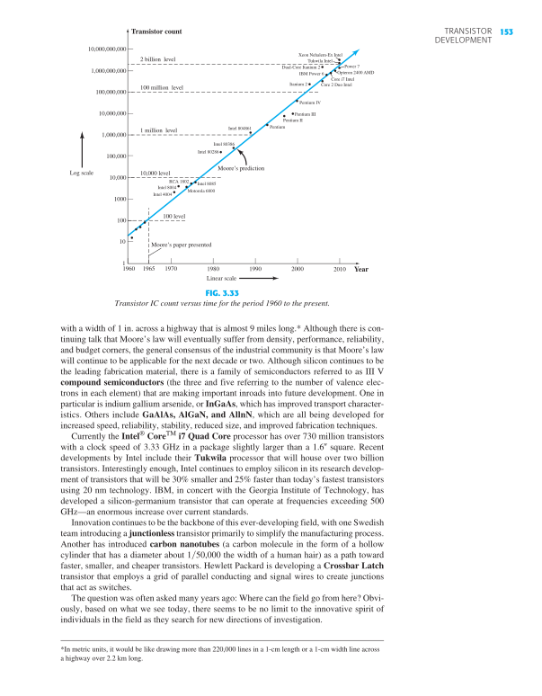
153TRANSISTOR DEVELOPMENTwith a width of 1 in. across a highway that is almost 9 miles long. * Although there is con-tinuing talk that Moore’s law will eventually suffer from density, performance, reliability, and budget corners, the general consensus of the industrial community is that Moore’s law will continue to be applicable for the next decade or two. Although silicon continues to be the leading fabrication material, there is a family of semiconductors referred to as III V compound semiconductors (the three and five referring to the number of valence elec-trons in each element) that are making important inroads into future development. One in particular is indium gallium arsenide, or InGaAs , which has improved transport character-istics. Others include GaAlAs, AlGaN, and AllnN, which are all being developed for increased speed, reliability, stability, reduced size, and improved fabrication techniques. Currently the Intel ® Core TM i7 Quad Core processor has over 730 million transistors with a clock speed of 3.33 GHz in a package slightly larger than a 1.6 square. Recent developments by Intel include their Tukwila processor that will house over two billion transistors. Interestingly enough, Intel continues to employ silicon in its research develop-ment of transistors that will be 30% smaller and 25% faster than today’s fastest transistors using 20 nm technology. IBM, in concert with the Georgia Institute of Technology, has developed a silicon-germanium transistor that can operate at frequencies exceeding 500 GHz—an enormous increase over current standards. Innovation continues to be the backbone of this ever-developing field, with one Swedish team introducing a junctionless transistor primarily to simplify the manufacturing process. Another has introduced carbon nanotubes (a carbon molecule in the form of a hollow cylinder that has a diameter about 150,000 the width of a human hair) as a path toward faster, smaller, and cheaper transistors. Hewlett Packard is developing a Crossbar Latch transistor that employs a grid of parallel conducting and signal wires to create junctions that act as switches. The question was often asked many years ago: Where can the field go from here? Obvi-ously, based on what we see today, there seems to be no limit to the innovative spirit of individuals in the field as they search for new directions of investigation. * In metric units, it would be like drawing more than 220,000 lines in a 1-cm length or a 1-cm width line across a highway over 2.2 km long. Pentium II10,000,000,00011,000,000,000100,000,00010,000,0001,000,000100,00010,000100010100Transistor count1960196519701980199020002010 Year100 level10,000 level1 million level2 billion level100 million levelMoore’s paper presentedMoore’s predictionIntel 4004Intel 8004Intel 80286Intel 80386Intel 804861PentiumPentium IIIPentium IVItanium 2Core 2 Duo IntelDual-Core Itanium 2Core i7 IntelOpteron 2400 AMDPower 7IBM Power 6Motorola 6800RCA 1802Intel 8085Tukwila IntelXeon Nehalem-Ex IntelLog scaleLinear scale FIG. 3.33 Transistor IC count versus time for the period 1960 to the present.
textbook p. 153PDF p. 25
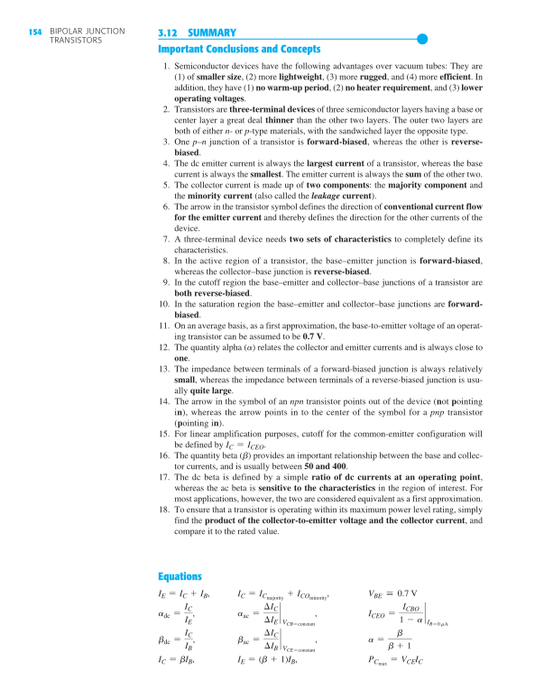
BIPOLAR JUNCTION TRANSISTORS154 3.12 SUMMARY ● Important Conclusions and Concepts 1. Semiconductor devices have the following advantages over vacuum tubes: They are (1) of smaller size , (2) more lightweight , (3) more rugged , and (4) more efficient . In addition, they have (1) no warm-up period , (2) no heater requirement , and (3) lower operating voltages . 2. Transistors are three-terminal devices of three semiconductor layers having a base or center layer a great deal thinner than the other two layers. The outer two layers are both of either n - or p -type materials, with the sandwiched layer the opposite type. 3. One p – n junction of a transistor is forward-biased , whereas the other is reverse-biased . 4. The dc emitter current is always the largest current of a transistor, whereas the base current is always the smallest . The emitter current is always the sum of the other two. 5. The collector current is made up of two components : the majority component and the minority current (also called the leakage current ). 6. The arrow in the transistor symbol defines the direction of conventional current flow for the emitter current and thereby defines the direction for the other currents of the device. 7. A three-terminal device needs two sets of characteristics to completely define its characteristics. 8. In the active region of a transistor, the base–emitter junction is forward-biased , whereas the collector–base junction is reverse-biased . 9. In the cutoff region the base–emitter and collector–base junctions of a transistor are both reverse-biased . 10. In the saturation region the base–emitter and collector–base junctions are forward-biased . 11. On an average basis, as a first approximation, the base-to-emitter voltage of an operat-ing transistor can be assumed to be 0.7 V . 12. The quantity alpha (a) relates the collector and emitter currents and is always close to one . 13. The impedance between terminals of a forward-biased junction is always relatively small , whereas the impedance between terminals of a reverse-biased junction is usu-ally quite large . 14. The arrow in the symbol of an npn transistor points out of the device ( n ot p ointing i n ), whereas the arrow points in to the center of the symbol for a pnp transistor ( p ointing i n ). 15. For linear amplification purposes, cutoff for the common-emitter configuration will be defined by IC = ICEO. 16. The quantity beta (b) provides an important relationship between the base and collec-tor currents, and is usually between 50 and 400 . 17. The dc beta is defined by a simple ratio of dc currents at an operating point , whereas the ac beta is sensitive to the characteristics in the region of interest. For most applications, however, the two are considered equivalent as a first approximation. 18. To ensure that a transistor is operating within its maximum power level rating, simply find the product of the collector-to-emitter voltage and the collector current , and compare it to the rated value. Equations IE = IC + IB, IC = ICmajority + ICOminority, VBE 0.7 Vadc = ICIE, aac = ICIEVCB = constant, ICEO =ICBO1 - a `IB = 0 mAbdc = ICIB, bac = ICIBVCE = constant, a =bb + 1IC = bIB, IE = (b + 1)IB, PCmax = VCEIC
textbook p. 154PDF p. 26
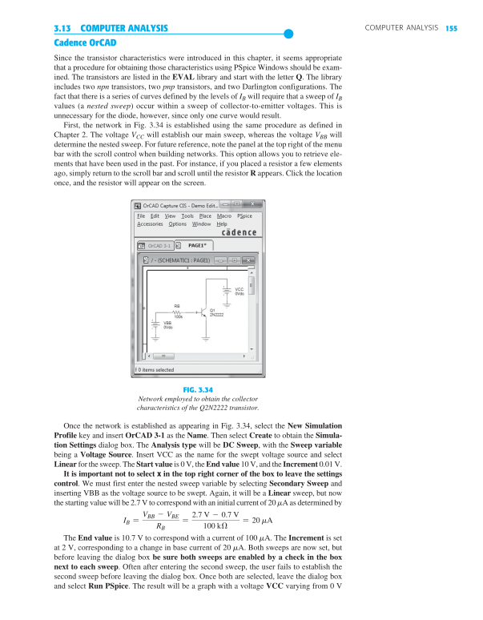
155COMPUTER ANALYSIS 3.13 COMPUTER ANALYSIS ● Cadence OrCAD Since the transistor characteristics were introduced in this chapter, it seems appropriate that a procedure for obtaining those characteristics using PSpice Windows should be exam-ined. The transistors are listed in the EVAL library and start with the letter Q . The library includes two npn transistors, two pnp transistors, and two Darlington configurations. The fact that there is a series of curves defined by the levels of I B will require that a sweep of I B values (a nested sweep ) occur within a sweep of collector-to-emitter voltages. This is unnecessary for the diode, however, since only one curve would result. First, the network in Fig. 3.34 is established using the same procedure as defined in Chapter 2 . The voltage V CC will establish our main sweep, whereas the voltage V BB will determine the nested sweep. For future reference, note the panel at the top right of the menu bar with the scroll control when building networks. This option allows you to retrieve ele-ments that have been used in the past. For instance, if you placed a resistor a few elements ago, simply return to the scroll bar and scroll until the resistor R appears. Click the location once, and the resistor will appear on the screen. FIG. 3.34 Network employed to obtain the collector characteristics of the Q2N2222 transistor. Once the network is established as appearing in Fig. 3.34 , select the New Simulation Profile key and insert OrCAD 3-1 as the Name . Then select Create to obtain the Simula-tion Settings dialog box. The Analysis type will be DC Sweep , with the Sweep variable being a Voltage Source . Insert VCC as the name for the swept voltage source and select Linear for the sweep. The Start value is 0 V, the End value 10 V, and the Increment 0.01 V. It is important not to select x in the top right corner of the box to leave the settings control . We must first enter the nested sweep variable by selecting Secondary Sweep and inserting VBB as the voltage source to be swept. Again, it will be a Linear sweep, but now the starting value will be 2.7 V to correspond with an initial current of 20 mA as determined by IB = VBB - VBERB= 2.7 V - 0.7 V100 k= 20 mA The End value is 10.7 V to correspond with a current of 100 mA. The Increment is set at 2 V, corresponding to a change in base current of 20 mA. Both sweeps are now set, but before leaving the dialog box be sure both sweeps are enabled by a check in the box next to each sweep . Often after entering the second sweep, the user fails to establish the second sweep before leaving the dialog box. Once both are selected, leave the dialog box and select Run PSpice . The result will be a graph with a voltage VCC varying from 0 V
textbook p. 155PDF p. 27
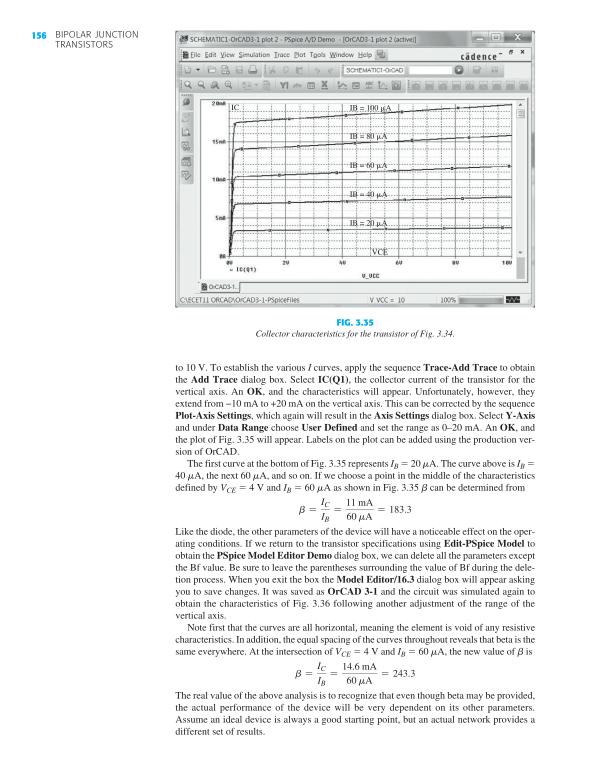
BIPOLAR JUNCTION TRANSISTORS156 to 10 V. To establish the various I curves, apply the sequence Trace-Add Trace to obtain the Add Trace dialog box. Select IC(Q1) , the collector current of the transistor for the vertical axis. An OK , and the characteristics will appear. Unfortunately, however, they extend from −10 mA to +20 mA on the vertical axis. This can be corrected by the sequence Plot-Axis Settings , which again will result in the Axis Settings dialog box. Select Y-Axis and under Data Range choose User Defined and set the range as 0–20 mA. An OK , and the plot of Fig. 3.35 will appear. Labels on the plot can be added using the production ver-sion of OrCAD. The first curve at the bottom of Fig. 3.35 represents I B 20 mA. The curve above is I B 40 mA, the next 60 mA, and so on. If we choose a point in the middle of the characteristics defined by V CE 4 V and I B 60 mA as shown in Fig. 3.35 b can be determined from b = ICIB= 11 mA60 mA = 183.3 Like the diode, the other parameters of the device will have a noticeable effect on the oper-ating conditions. If we return to the transistor specifications using Edit-PSpice Model to obtain the PSpice Model Editor Demo dialog box, we can delete all the parameters except the Bf value. Be sure to leave the parentheses surrounding the value of Bf during the dele-tion process. When you exit the box the Model Editor/16.3 dialog box will appear asking you to save changes. It was saved as OrCAD 3-1 and the circuit was simulated again to obtain the characteristics of Fig. 3.36 following another adjustment of the range of the vertical axis. Note first that the curves are all horizontal, meaning the element is void of any resistive characteristics. In addition, the equal spacing of the curves throughout reveals that beta is the same everywhere. At the intersection of V CE 4 V and I B 60 mA, the new value of b is b = ICIB= 14.6 mA60 mA= 243.3 The real value of the above analysis is to recognize that even though beta may be provided, the actual performance of the device will be very dependent on its other parameters. Assume an ideal device is always a good starting point, but an actual network provides a different set of results. ICIB = 100 AIB = 80 AIB = 60 AIB = 40 AIB = 20 AVCE FIG. 3.35 Collector characteristics for the transistor of Fig. 3.34 .
textbook p. 156PDF p. 28
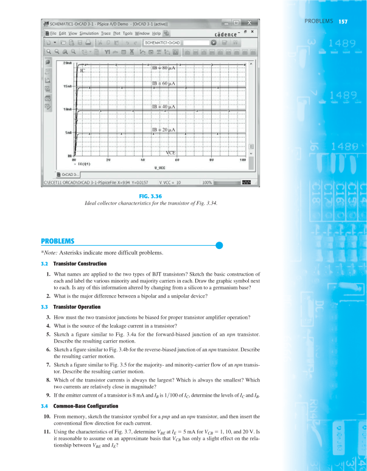
157PROBLEMS PROBLEMS ● * Note: Asterisks indicate more difficult problems. 3.2 Transistor Construction 1. What names are applied to the two types of BJT transistors? Sketch the basic construction of each and label the various minority and majority carriers in each. Draw the graphic symbol next to each. Is any of this information altered by changing from a silicon to a germanium base? 2. What is the major difference between a bipolar and a unipolar device? 3.3 Transistor Operation 3. How must the two transistor junctions be biased for proper transistor amplifier operation? 4. What is the source of the leakage current in a transistor? 5. Sketch a figure similar to Fig. 3.4a for the forward-biased junction of an npn transistor. Describe the resulting carrier motion. 6. Sketch a figure similar to Fig. 3.4b for the reverse-biased junction of an npn transistor. Describe the resulting carrier motion. 7. Sketch a figure similar to Fig. 3.5 for the majority- and minority-carrier flow of an npn transis-tor. Describe the resulting carrier motion. 8. Which of the transistor currents is always the largest? Which is always the smallest? Which two currents are relatively close in magnitude? 9. If the emitter current of a transistor is 8 mA and I B is 1100 of I C , determine the levels of I C and I B . 3.4 Common-Base Configuration 10. From memory, sketch the transistor symbol for a pnp and an npn transistor, and then insert the conventional flow direction for each current. 11. Using the characteristics of Fig. 3.7 , determine V BE at I E 5 mA for V CB 1, 10, and 20 V. Is it reasonable to assume on an approximate basis that V CB has only a slight effect on the rela-tionship between V BE and I E ? ICIB = 80 AIB = 60 AIB = 40 AIB = 20 AVCE FIG. 3.36 Ideal collector characteristics for the transistor of Fig. 3.34 .
textbook p. 157PDF p. 29
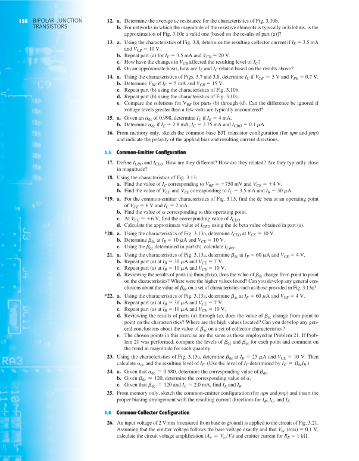
BIPOLAR JUNCTION TRANSISTORS158 12. a. Determine the average ac resistance for the characteristics of Fig. 3.10b . b. For networks in which the magnitude of the resistive elements is typically in kilohms, is the approximation of Fig. 3.10c a valid one [based on the results of part (a)]? 13. a. Using the characteristics of Fig. 3.8 , determine the resulting collector current if I E 3.5 mA and V CB 10 V. b. Repeat part (a) for I E 3.5 mA and V CB 20 V. c. How have the changes in V CB affected the resulting level of I C ? d. On an approximate basis, how are I E and I C related based on the results above? 14. a. Using the characteristics of Figs. 3.7 and 3.8 , determine I C if VCB = 5 V and V BE 0.7 V. b. Determine V BE if I C 5 mA and V CB 15 V. c. Repeat part (b) using the characteristics of Fig. 3.10b . d. Repeat part (b) using the characteristics of Fig. 3.10c . e. Compare the solutions for V BE for parts (b) through (d). Can the difference be ignored if voltage levels greater than a few volts are typically encountered? 15. a. Given an a dc of 0.998, determine I C if I E 4 mA. b. Determine a dc if I E 2.8 mA, I C 2.75 mA and ICBO 0.1 mA. 16. From memory only, sketch the common-base BJT transistor configuration (for npn and pnp ) and indicate the polarity of the applied bias and resulting current directions. 3.5 Common-Emitter Configuration 17. Define I CBO and I CEO . How are they different? How are they related? Are they typically close in magnitude? 18. Using the characteristics of Fig. 3.13 : a. Find the value of I C corresponding to V BE 750 mV and V CE 4 V. b. Find the value of V CE and V BE corresponding to I C 3.5 mA and I B 30 mA. *19. a. For the common-emitter characteristics of Fig. 3.13 , find the dc beta at an operating point of V CE 6 V and I C 2 mA. b. Find the value of a corresponding to this operating point. c. At V CE 6 V, find the corresponding value of I CEO . d. Calculate the approximate value of I CBO using the dc beta value obtained in part (a). *20. a. Using the characteristics of Fig. 3.13a , determine I CEO at V CE 10 V. b. Determine b dc at I B 10 mA and V CE 10 V. c. Using the b dc determined in part (b), calculate I CBO . 21. a. Using the characteristics of Fig. 3.13a , determine b dc at I B 60 mA and V CE 4 V. b. Repeat part (a) at I B 30 mA and V CE 7 V. c. Repeat part (a) at I B 10 mA and V CE 10 V. d. Reviewing the results of parts (a) through (c), does the value of b dc change from point to point on the characteristics? Where were the higher values found? Can you develop any general con-clusions about the value of b dc on a set of characteristics such as those provided in Fig. 3.13a ? *22. a. Using the characteristics of Fig. 3.13a , determine b ac at I B 60 mA and V CE 4 V. b. Repeat part (a) at I B 30 mA and V CE 7 V. c. Repeat part (a) at I B 10 mA and V CE 10 V. d. Reviewing the results of parts (a) through (c), does the value of b ac change from point to point on the characteristics? Where are the high values located? Can you develop any gen-eral conclusions about the value of b ac on a set of collector characteristics? e. The chosen points in this exercise are the same as those employed in Problem 21. If Prob-lem 21 was performed, compare the levels of b dc and b ac for each point and comment on the trend in magnitude for each quantity. 23. Using the characteristics of Fig. 3.13a , determine b dc at I B 25 mA and V CE 10 V. Then calculate a dc and the resulting level of I E . (Use the level of I C determined by IC = bdcIB.) 24. a. Given that adc = 0.980, determine the corresponding value of b dc . b. Given bdc = 120, determine the corresponding value of a. c. Given that bdc = 120 and I C 2.0 mA, find I E and I B . 25. From memory only, sketch the common-emitter configuration (for npn and pnp ) and insert the proper biasing arrangement with the resulting current directions for I B , I C , and I E . 3.6 Common-Collector Configuration 26. An input voltage of 2 V rms (measured from base to ground) is applied to the circuit of Fig. 3.21 . Assuming that the emitter voltage follows the base voltage exactly and that V be (rms) 0.1 V, calculate the circuit voltage amplification (Av = Vo>Vi) and emitter current for R E 1 k.
textbook p. 158PDF p. 30
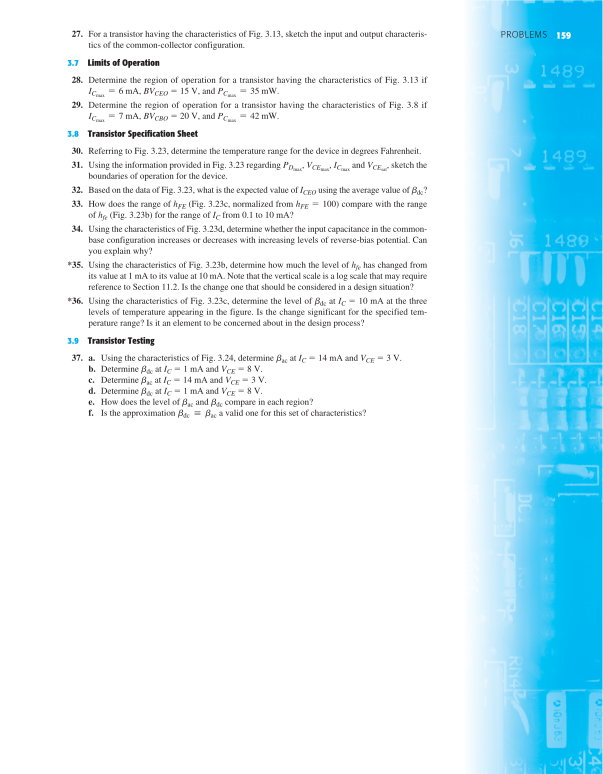
159PROBLEMS 27. For a transistor having the characteristics of Fig. 3.13 , sketch the input and output characteris-tics of the common-collector configuration. 3.7 Limits of Operation 28. Determine the region of operation for a transistor having the characteristics of Fig. 3.13 if ICmax = 6 mA, BV CEO 15 V, and PCmax = 35 mW. 29. Determine the region of operation for a transistor having the characteristics of Fig. 3.8 if ICmax = 7 mA, BV CBO 20 V, and PCmax = 42 mW. 3.8 Transistor Specification Sheet 30. Referring to Fig. 3.23 , determine the temperature range for the device in degrees Fahrenheit. 31. Using the information provided in Fig. 3.23 regarding PDmax, VCEmax, ICmax and VCEsat, sketch the boundaries of operation for the device. 32. Based on the data of Fig. 3.23 , what is the expected value of I CEO using the average value of b dc ? 33. How does the range of h FE ( Fig. 3.23c , normalized from hFE = 100) compare with the range of h fe ( Fig. 3.23b ) for the range of I C from 0.1 to 10 mA? 34. Using the characteristics of Fig. 3.23d , determine whether the input capacitance in the common-base configuration increases or decreases with increasing levels of reverse-bias potential. Can you explain why? *35. Using the characteristics of Fig. 3.23b , determine how much the level of h fe has changed from its value at 1 mA to its value at 10 mA. Note that the vertical scale is a log scale that may require reference to Section 11.2 . Is the change one that should be considered in a design situation? *36. Using the characteristics of Fig. 3.23c , determine the level of b dc at I C 10 mA at the three levels of temperature appearing in the figure. Is the change significant for the specified tem-perature range? Is it an element to be concerned about in the design process? 3.9 Transistor Testing 37. a. Using the characteristics of Fig. 3.24 , determine b ac at I C 14 mA and V CE 3 V. b. Determine b dc at I C 1 mA and V CE 8 V. c. Determine b ac at I C 14 mA and V CE 3 V. d. Determine b dc at I C 1 mA and V CE 8 V. e. How does the level of b ac and b dc compare in each region? f. Is the approximation bdc bac a valid one for this set of characteristics?
textbook p. 159PDF p. 31